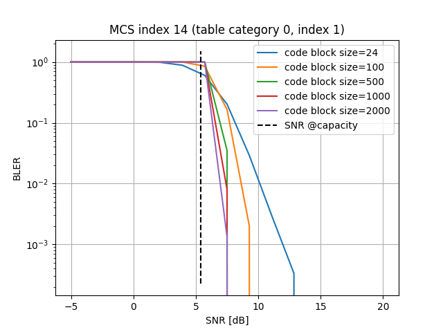

PHYAbstraction#
- class sionna.sys.PHYAbstraction(interp_fun: sionna.phy.utils.misc.Interpolate | None = None, mcs_decoder_fun: sionna.phy.utils.misc.MCSDecoder | None = None, transport_block_fun: sionna.phy.utils.misc.TransportBlock | None = None, sinr_effective_fun: sionna.sys.effective_sinr.EffectiveSINR | None = None, load_bler_tables_from: str | List[str] = 'default', snr_db_interp_min_max_delta: Tuple[float, float, float] = (-5, 30.01, 0.1), cbs_interp_min_max_delta: Tuple[int, int, int] = (24, 8448, 100), bler_interp_delta: float = 0.01, precision: Literal['single', 'double'] | None = None, device: str | None = None, **kwargs: Any)[source]#
Bases:
sionna.phy.block.BlockClass for physical layer abstraction.
For a given signal-to-interference-plus-noise-ratio (SINR) provided on a per-stream basis, and for a given modulation order, coderate, and number of coded bits specified for each user, it produces the corresponding number of successfully decoded bits, HARQ feedback, effective SINR, block error rate (BLER), and transport BLER (TBLER).
At object instantiation, precomputed BLER tables are loaded and interpolated on a fine (SINR, code block size) grid for each modulation and coding scheme (MCS) index.
When the object is called, the post-equalization SINR is first converted to an effective SINR. Then, the effective SINR is used to retrieve the BLER from pre-computed and interpolated tables. Finally, the BLER determines the TBLER, which represents the probability that at least one code block is incorrectly received.
- Parameters:
interp_fun (sionna.phy.utils.misc.Interpolate | None) – Function for interpolating data defined on rectangular or unstructured grids, used for BLER and SINR interpolation. If None, it is set to an instance of
SplineGriddataInterpolation.mcs_decoder_fun (sionna.phy.utils.misc.MCSDecoder | None) – Function mapping MCS indices to modulation order and coderate. If None, it is set to an instance of
MCSDecoderNR.transport_block_fun (sionna.phy.utils.misc.TransportBlock | None) – Function computing the number and size (measured in bits) of code blocks within a transport block. If None, it is set to an instance of
TransportBlockNR. Custom implementations retain the legacy(cb_size, num_cb)contract; because they do not exposetb_size, decoded-bit accounting falls back tocb_size * num_cbfor those hooks.sinr_effective_fun (sionna.sys.effective_sinr.EffectiveSINR | None) – Function computing the effective SINR. If None, it is set to an instance of
EESM.load_bler_tables_from (str | List[str]) – Name of file(s) containing pre-computed SINR-to-BLER tables for different categories, table indices, MCS indices, SINR and code block sizes. If “default”, then the pre-computed tables stored in “bler_tables/” folder are loaded.
snr_db_interp_min_max_delta (Tuple[float, float, float]) – Tuple of (min, max, delta) values [dB] defining the list of SINR [dB] values at which the BLER is interpolated, as min, min+delta, min+2*delta,…, up until max.
cbs_interp_min_max_delta (Tuple[int, int, int]) – Tuple of (min, max, delta) values defining the list of code block size values at which the BLER and SINR are interpolated, as min, min+delta, min+2*delta,…,max. The default grid extends to the full 5G-NR CBS range, but the built-in BLER tables are only simulated up to CBS 2000. With the default interpolator, requests above the largest simulated CBS use that boundary curve (clamp-to-edge); custom interpolators may differ.
bler_interp_delta (float) – Spacing of the BLER grid at which SINR is interpolated.
precision (Literal['single', 'double'] | None) – Precision used for internal calculations and outputs. If set to None,
precisionis used.device (str | None) – Device for computation. If None,
deviceis used.kwargs (Any)
- Inputs:
mcs_index – […, num_ut], torch.int32. MCS index for each user.
sinr – […, num_ofdm_symbols, num_subcarriers, num_ut, num_streams_per_ut], torch.float | None. Post-equalization SINR in linear scale for each OFDM symbol, subcarrier, user and stream. If None, then
sinr_effandnum_allocated_reare both required.sinr_eff – […, num_ut], torch.float | None. Effective SINR in linear scale for each user. If None, then
sinris required.num_allocated_re – […, num_ut], torch.int32 | None. Number of allocated resources in a slot, computed across OFDM symbols, subcarriers and streams, for each user. If None, then
sinris required.mcs_table_index – […, num_ut], torch.int32 | int. MCS table index. Defaults to 1. For further details, refer to the Note.
mcs_category – […, num_ut], torch.int32 | int. MCS table category. Defaults to 0. For further details, refer to the Note.
check_mcs_index_validity – bool. If True, a ValueError is thrown if the input MCS indices are not valid for the given configuration. Defaults to True.
- Outputs:
num_decoded_bits – […, num_ut], torch.int32. Number of successfully delivered transport-block information bits for each user (
tb_sizeon ACK, else 0). This excludes TB/CB CRC bits: those CRCs are part of the FEC code-block payload but are not counted here, because this output is intended for system-level throughput accounting. For a customtransport_block_funthat only implements the legacy two-value return contract, it falls back tocb_size * num_cb.harq_feedback – […, num_ut], -1 | 0 | 1. If 0 (1, resp.), then a NACK (ACK, resp.) is received. If -1, feedback is missing since the user is not scheduled for transmission.
sinr_eff – […, num_ut], torch.float. Effective SINR in linear scale for each user.
tbler – […, num_ut], torch.float. Transport block error rate (BLER) for each user.
bler – […, num_ut], torch.float. Block error rate (BLER) for each user.
Notes
In this class, the terms SNR (signal-to-noise ratio) and SINR (signal-to-interference-plus-noise ratio) can be used interchangeably. This is because the equivalent AWGN model used for BLER mapping does not explicitly account for interference.
When a requested (category, table index, MCS, CBS, SINR) combination has no calibrated BLER entry,
get_bler()returnsinf. That value propagates to TBLER and yields a deterministic NACK. Link adaptation relies on the same convention to skip unavailable MCS candidates.Examples
import numpy as np from sionna.sys import PHYAbstraction, EESM from sionna.phy.nr.utils import MCSDecoderNR, TransportBlockNR from sionna.phy.utils import SplineGriddataInterpolation # Instantiate the class for BLER and SINR interpolation bler_snr_interp_fun = SplineGriddataInterpolation() # Instantiate the class for mapping MCS to modulation order and coderate # in 5G NR mcs_decoder_fun = MCSDecoderNR() # Instantiate the class for computing the number and size of code blocks # within a transport block in 5G NR transport_block_fun = TransportBlockNR() # Instantiate the class for computing the effective SINR sinr_effective_fun = EESM() # By instantiating a PHYAbstraction object, precomputed BLER tables are # loaded and interpolated on a fine (SINR, code block size) grid for each MCS phy_abs = PHYAbstraction( interp_fun=bler_snr_interp_fun, mcs_decoder_fun=mcs_decoder_fun, transport_block_fun=transport_block_fun, sinr_effective_fun=sinr_effective_fun) # Plot a BLER table phy_abs.plot(plot_subset={'category': {0: {'index': {1: {'MCS': 14}}}}}, show=True);

# One can also compute new BLER tables # SINR values and code block sizes @ new simulations are performed snr_dbs = np.linspace(-5, 25, 5) cb_sizes = np.arange(24, 8448, 1000) # MCS values @ new simulations are performed sim_set = {'category': { 0: {'index': { 1: {'MCS': [15]} }}}} # Compute new tables new_table = phy_abs.new_bler_table( snr_dbs, cb_sizes, sim_set, max_mc_iter=15, batch_size=10, verbose=True)
Attributes
- property bler_interp_delta: float#
float: Get/set the spacing of the BLER grid at which SINR is interpolated.
- property bler_table: Dict#
dict (read-only): Collection of tables containing BLER values for different values of SNR, MCS table, MCS index and CB size.
bler_table['category'][cat]['index'][mcs_table_index]['MCS'][mcs]['CBS'][cb_size]contains the lists of BLER values.bler_table['category'][cat]['index'][mcs_table_index]['MCS'][mcs]['SNR_db']contains the list of SNR values.bler_table['category'][cat]['index'][mcs_table_index]['MCS'][mcs]['EbN0_db']contains the list of \(E_b/N_0\) values.
- property bler_table_filenames: List[str]#
str | list of str: Get/set the absolute path name of the files containing BLER tables.
- property bler_table_interp: torch.Tensor#
[n_categories, n_tables, n_mcs, n_cbs_index, n_snr], torch.float (read-only): Tensor containing BLER values interpolated across SINR and CBS values, for different categories and MCS table indices. The first axis accounts for the category, e.g., ‘PDSCH’ or ‘PUSCH’ in 5G-NR, the second axis corresponds to the 38.214 MCS table index while the third axis carries the MCS index.
- property cbs_interp_min_max_delta: Tuple[int, int, int]#
[3], tuple: Get/set the tuple of (min, max, delta) values defining the list of code block size values at which the BLER and SINR are interpolated, as min, min+delta, min+2*delta,…, up until max.
Methods
- get_bler(mcs_index: int | torch.Tensor, mcs_table_index: int | torch.Tensor, mcs_category: int | torch.Tensor, cb_size: int | torch.Tensor, snr_eff: torch.Tensor) torch.Tensor[source]#
Retrieves from interpolated tables the BLER corresponding to a certain table index, MCS, CB size, and SINR values provided as input. If the corresponding interpolated table is not available, it returns Inf.
- Parameters:
mcs_index (int | torch.Tensor) – MCS index for each user
mcs_table_index (int | torch.Tensor) – MCS table index for each user. For further details, refer to the Note.
mcs_category (int | torch.Tensor) – MCS table category for each user. For further details, refer to the Note.
cb_size (int | torch.Tensor) – Code block size for each user
snr_eff (torch.Tensor) – Effective SINR for each user
- Outputs:
bler – BLER corresponding to the input channel type, table index, MCS, CB size and SINR, retrieved from internal interpolation tables. Missing table entries are returned as
inf.
- get_idx_from_grid(val: torch.Tensor, which: str) torch.Tensor[source]#
Retrieves the index of a SINR or CBS value in the interpolation grid.
- Parameters:
val (torch.Tensor) – Values to be quantized
which (str) – Whether the values are SNR (equivalent to SINR) or CBS. Must be “snr” or “cbs”.
- Outputs:
idx – Index of the values in the interpolation grid
- static load_table(filename: str) Dict[source]#
Loads a table stored in JSON file.
- Parameters:
filename (str) – Name of the JSON file containing the table
- Outputs:
table – Table loaded from file
- new_bler_table(snr_dbs: List[float] | numpy.ndarray, cb_sizes: List[int] | numpy.ndarray, sim_set: Dict, channel: sionna.phy.utils.misc.SingleLinkChannel | None = None, filename: str | None = None, write_mode: str = 'w', batch_size: int = 1000, max_mc_iter: int = 100, target_bler: float | None = None, compile_mode: str | None = None, early_stop: bool = True, filename_log: str | None = None, verbose: bool = True) Dict[source]#
Computes static tables mapping SNR values of an AWGN channel to the corresponding block error rate (BLER) via Monte-Carlo simulations for different MCS indices, code block sizes and channel types. Note that the newly computed table is merged with the internal
self.bler_table.The simulation continues with the next SNR point after
max_mc_iterbatches of sizebatch_sizehave been simulated. Early stopping allows to stop the simulation after the first error-free SNR point or after reaching a certaintarget_bler. For more details, please seesim_ber().- Parameters:
snr_dbs (List[float] | numpy.ndarray) – List of SNR [dB] value(s) at which the BLER is computed
cb_sizes (List[int] | numpy.ndarray) – List of code block (CB) size(s) at which the BLER is computed
sim_set (Dict) – Dictionary containing the list of MCS indices at which the BLER is computed via simulation. The dictionary structure is of the kind:
sim_set['category'][category]['index'][mcs_table_index]['MCS'][mcs_list].channel (sionna.phy.utils.misc.SingleLinkChannel | None) – Object for simulating single-link, i.e., single-carrier and single-stream, channels. If None, it is set to an instance of
CodedAWGNChannelNR.filename (str | None) – Name of JSON file where the BLER tables are saved. If None, results are not saved.
write_mode (str) – If ‘w’, then
filenameis rewritten. If ‘a’, then the produced results are appended tofilename.batch_size (int) – Batch size for Monte-Carlo BLER simulations
max_mc_iter (int) – Maximum number of Monte-Carlo iterations per SNR point
target_bler (float | None) – The simulation stops after the first SNR point which achieves a lower block error rate as specified by
target_bler. This requiresearly_stopto be True.compile_mode (str | None) – Execution mode of channel call method. If None, channel is executed as is.
early_stop (bool) – If True, the simulation stops after the first error-free SNR point.
filename_log (str | None) – Name of logging file. If None, logs are not produced.
verbose (bool) – If True, the simulation progress is visualized, as well as the names of files of results and figures.
- Outputs:
new_table – Newly computed BLER table
- plot(plot_subset: str | Dict = 'all', show: bool = True, save_path: str | None = None) List[str][source]#
Visualizes and/or saves to file the SINR-to-BLER tables.
- Parameters:
plot_subset (str | Dict) – Dictionary containing the list of MCS indices to consider, stored at
plot_subset['category'][category]['index'][mcs_table_index]['MCS']. If “all”, then plots are produced for all available BLER tables.show (bool) – If True, then plots are visualized. Defaults to True.
save_path (str | None) – Folder path where BLER plots are saved. If None, then plots are not saved.
- Outputs:
fignames – List of names of files containing BLER plots
- property snr_db_interp_min_max_delta: Tuple[float, float, float]#
[3], tuple: Get/set the tuple of (min, max, delta) values [dB] defining the list of SINR values at which the BLER is interpolated, as min, min+delta, min+2*delta,…, up until max.
- property snr_table_interp: torch.Tensor#
[n_categories, n_tables, n_mcs, n_cbs_index, n_bler], torch.float (read-only): Tensor containing SINR values interpolated across BLER and CBS values, for different categories and MCS table indices. The first axis accounts for the category, e.g., ‘PDSCH’ or ‘PUSCH’ in 5G-NR, the second axis corresponds to the 38.214 MCS table index and the third axis accounts for the MCS index.
- validate_bler_table() bool[source]#
Validates the dictionary structure of
self.bler_table.- Outputs:
is_valid – True if
self.bler_tablehas a valid structure- Raises:
ValueError – If the structure is invalid
{kind=link}